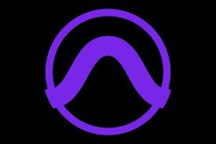
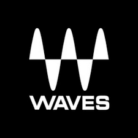
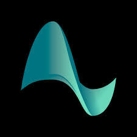
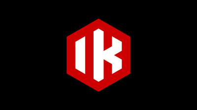

Acerca de mí
Desde temprana edad, Juan ha recorrido un camino musical notable que lo ha llevado a convertirse en un versátil productor musical, ingeniero de sonido y multi instrumentista.
Desde sus primeros días tocando el piano a la edad de 13 años hasta graduarse como Licenciado en Música en el año 2013, Juan ha dedicado su vida a explorar los límites del arte sonoro y la producción musical.
Esta diversidad musical lo llevó a colaborar con varias bandas y cantantes locales, donde perfeccionó su arte y expandió su conocimiento de diferentes géneros musicales.
En el año 2007, Juan dio un salto audaz hacia el mundo de la producción musical al comenzar a trabajar en estudios de grabación y proyectos musicales, consolidó su experiencia y conocimientos adquiridos a lo largo de los años, adquiriendo grandes habilidaades en producción musical, grabación e ingeniería de sonido.
A lo largo de su carrera, Juan ha tenido el privilegio de colaborar con una impresionante variedad de artistas, desde talentos locales hasta músicos de todo el mundo.

Equipos
- Universal Audio Apollo Twin X
- Yamaha HS50m
- AGK K240 MKii
- Fender American Deluxe Strat
- Epiphone Les Paul Plus Top
- Line 6 Pod Go
- Orange Micro Terror
- Novation Launch Key Mini
- M Audio Oxygen 61
- Squier Vintage Modified Jazz Bass
Software
- Avid Pro Tools Studio 2024
- iZotope RX 10 Standard
- iZotope Ozone 10 Standard
- Celemony Melodyne Assistant
- Antares Autotune Unlimited
- Synchroarts VocAlign Projejct 5
- LANDR Studio
- Ableton Live 12 Lite
- Reaper
- Universal Audio Luna
Plugins
- UAD Plugins
- Waves Platinum & SSL
- Plugin Alliance
- IK Multimedia
- Native Instruments
- Sonnox
- Soundtoys
- Avid Plugins
- Valhalla Audio
- Baby Audio
Sampling & Virtual Instruments
- Native Instruments Kontakt 7
- Native Instruments Komplete Standard
- Steven Slate Drums 5
- XLN Audio Addictive Keys
- Spitfire Audio Orig!nals
- Arturia Analog Lab
- IK Sampletank
- IK Syntronic 2
- IK Amplitube
- AAS Session Bundle
- 
- 
- 
- 